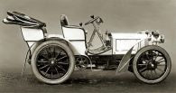
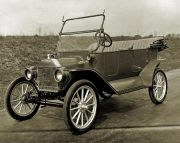

Az autóipar az utóbbi évtizedekben jelentős fejlődésen ment keresztül, és az autók ma már sokféle formában és típusban elérhetők.

Az elektromos járművek térnyerése, a fenntartható technológiák és az önjáró járművek fejlesztése tovább formálja az autóipart. Az autók nem csupán közlekedési eszközként funkcionálnak, hanem a kényelem, a biztonság és a technológiai fejlesztések terén is jelentős előrelépéseket tapasztalunk.
Az autók tervezésében és gyártásában alkalmazott innovációk folyamatosan változnak, miközben a járművek kényelmesebbé, hatékonyabbá és környezetbarátabbá válnak.